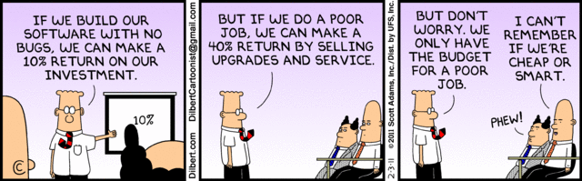

| Important Messages from the Instructors
Monday, April 18th, 2011
The results for the Project 12 test
fest [take 2] are now available.
I will not provide a test server from which you can launch remote players
to interact with your game server. Do study the logs from friday to find
mistakes.
Friday, April 15th, 2011
The logs from today's games are now available on-line in case you wish to
investigate your client's failings and/or people's strategies. It is more
or less an XML file that you can read in order to replay games:
- there is no log for the first preliminary round
- the second preliminary round
- there is no log for the loser's round
- the winner's round
- the first extra round
- the second extra round
I will make the testserver available later this afternoon in case you wish
to play some more games and/or test your players.
Watch the blog. I may make a server available on Monday that launches
players. Because I will not in my office it will become available on an
intermittent basis if at all.
Thursday, April 14th, 2011
For your final test phase, I have opened my game server at
antarctica.ccs.neu.edu, port 56789. It waits for four clients to link up
and then runs a complete tournament. The results are made available as
(partial) log files, which are
accessible
from the course page.
Wednesday, April 13th, 2011
Remember that Jose would like to see your line counts for your current
status of project 12. My own line count (posted a couple of days ago)
includes blank lines, comment lines, and large 'chapter' dividers as
drracket inserts them. (You saw some during my code walk.)
To keep things simple, I used a script that ran wc on my files and split
off the testing sections, which are explicitly marked as such. All we want
is a similarly simplistic line count.
Tuesday, April 12th, 2011
re: Project 12, test fest. The test fest will use the following
interpretation of the test specifications: (1) the Actions specify how the
test harness simulates the player and (2) the Results specify how the
proxy turn should responds to the action. You may note that this statement
is the original problem statement. (For whatever reason,
someone's email got me to write the red correction (now struck out) and
to make an incoherent change to my own test harness.)
re: Project 13, language memo. Due to partner switches, some of you ended
up with a different programming language than what you started with. I
leave it to you to write a joint memo with your current partner on the
language that you ended up using for project 12 or to write two separate
memos (one per partner) about the languages that you started with (project
3).
Monday, April 11th, 2011
Jose and I discussed the test fest and came to the conclusion that we will
grade project 12 as planned but without any extra credits for the test
fest. Due to the high failure rate, my tests discovered all possible flaws
in the running test harnesses.
Instead, we will re-run the test fest on Friday (April
15) based on your code base as of 9:50am and allocate extra points
based on that run. You have my test cases; you will have any corrections
if you convince me of mistakes in the test case design; and you have the
test cases of those pairs who worked out the project.
In light of this change, everyone should feel free to design an entirely
new set of tests for the next test run.
Sunday, April 10th, 2011
The preliminary results for the
Project 12 test fest are now available. Jose reports that two teams
checked in an xbuild script that fails to compile the test harness; one
team did not provide tests (don't tell me you didn't have time; the lack
of tests is the reason you didn't have time to finish your project); some
teams supply incorrect XML (is it really a problem to fix bugs from
previous projects concerning the XML format? especially now that XML has
become so critical).
Please thank Jose for delivering the results early. Immediately inspect
the counter-examples (you may have to 'view source' in your web browser to
see the XML source). Derive unit tests. Integrate them into your test
suite. And fix the bugs so that all unit tests pass again. And recall that
you do have a chance to complain in your homework 13 memo.
Saturday, April 9th, 2011
Here is the schedule for the final two weeks:
| Tuesday - 4/12 |
|---|
| 9:50 - 11:30 | final code walk |
| Wednesday - 4/13 |
|---|
| Due date: | project 13 |
| Thursday - 4/14 |
|---|
| last change date: | final fixes/clarifications of the protocol (if called for) |
| Friday - 4/15 |
|---|
| Due date: | final changes to code are due at 9:30am |
| last meeting (WVH 366) | competition |
| Tuesday - 4/19 |
|---|
| 10:30 - 12:00 | Pair 03 - Rushabh and Saumil |
| 02:30 - 04:00 | Pair 04 - Yuncheng and Ryan |
| 04:00 - 05:30 | Pair 01 - Sergey and Shakeib |
| Wednesday - 4/20 |
|---|
| 02:00 - 03:30 | Pair 08 - Nikko and Christopher |
| 03:30 - 05:00 | Pair 07 - Chunzhao and Reto |
| Thursday - 4/21 |
|---|
| 09:30 - 11:00 | Pair 05 - Aniket and Anshuman |
| 04:00 - 05:30 | Pair 02 - William and Abutalib |
The grade for project 12 is based on your code base as of Friday 4/08,
9:30am. For the competition, you may polish your code until Friday 4/15.
The final code walks will also cover your code base as of Friday 4/15.
The competition will proceed in four rounds. Each team may participate
with one AI player. For the first two rounds, we will run an Ingenious
game using random collections of your players. The top two survivors
move to the winner bracket and the remaining survivors move to the loser
bracket. If the server eliminates a player during the first two rounds,
the player is eliminated from the entire competition. In the third round,
the losers play against each other. In the fourth and final round, the
winners play for first place.
The competition is a chance for you to collect extra points. All
teams whose players survive the first game get 10 extra points. Eliminated
players do got receive any points. All teams whose players survive the
second game (loser or winner bracket) get another 20 extra points. The
winner of the competition gets 20 extra points for a total of 50 points
for the competition.
Friday, April 8th, 2011
For the curious, the core of my project consists of
| lines of code: | 3,189 |
| lines of test: | 1,829 |
| total lines: | 5,018 |
That is, the test suites comprise some 36% of my overall code. All line
counts include comments for the two sections, though the code segment
contains many more lines of comments than the test segment. My comments
are close to, but not completely up to the level required in PDP I or
Fundamentals I. Most of my code (but not all) is up to the conventional
Scheme/Racket coding standards (reasonable names, blank space, large
headers for comments from DrRacket, etc).
Thursday, April 7th, 2011
I have posted another clarification concerning the ordering of messages in
the interactions diagram for "take turn".
I have posted two clarifications concerning well-formed XML in the
problem statement.
I have posted the specifications for the test fest. And
now (Wed Apr 6 18:39:39 EDT 2011) I have posted a couple of corrections.
I have posted a small correction to the design document. Note the
strikeouts and the red words
Tuesday, April 5th, 2011
| People asked: | I replied with: |
|---|
Will each XML element be followed by a newline?
|
It will, for the sake of pedestrian languages.
|
Is the order of XML attributes guaranteed?
|
No, XML does not guarantee the order of attributes.
|
Is the order of XML elements guaranteed?
|
Yes, XML guarantees the order of elements within elements.
|
Is this intended to be the number of players currently in the game? Or
the current player's number? Or is it the number of players needed for
the game to run?
|
It is the number of players that will participate in the game.
|
Should we impose a time limit on the rerack decision for human players?
|
No. For the distributed version, I will specify an overall time limit of
10 seconds per turn (all placements plus rerack). While this time limit
in principle allows the participation of a human player, you must be
prepared to run an AI player.
|
In the notification protocol for task 2, should other players also be
notified if a player is ejected from the game?
|
Yes.
|
Tuesday, April 5th, 2011
Here are the results of the elections:
(define grades
'((ok+ ok ok- 0)
(090 75 65 50) ;; mine, added w/o knowledge of other ballots
;; YOU ACT AS IF YOU WERE A YOUNGER COPY OF ME. LOOK WHAT I HAD TO LEARN:
(100 70 40 00)
(100 75 50 45)
;; CLOSE ENOUGH FOR GOVERNMENT WORK. IF IT DOESN'T SHUT DOWN.
(100 85 75 50)
(098 85 75 50)
(096 83 70 50)
(090 80 70 50)
(100 88 70 42)
;; YOU ARE NOT READY TO TAKE ON A MANAGERIAL POSITION:
(100 95 90 85)
; (100 90 80 85) ;; invalid
(100 95 85 75)
(095 85 75 65)
(100 94 86 60)
(100 90 80 60)
(100 90 80 60)))
;; the averages are:
;; (97 85 72 53)
;; ================
(define (average selector)
(define s (apply + (map selector (rest grades))))
(quotient s (length (rest grades))))
(define averages
(map average (list first second third fourth)))
We will thus use 97 for an ok+,
85 for an ok,
72 for an ok-,
and 55 for a zero.
Someone asked how I turn numbers into letter grades, to which I replied
with "my scale is always the same: roughly 100-85 is the A-level grade,
85-70 the B-level, and below that are C and D all the way to 50."
Saturday, March 19th, 2011
On Recursion, Especially Generative Recursion
The code walks on Friday (3/18) suggested that people have difficulties
with selecting data traversal strategies. As HtDP (aka PDP I and
Fundamentals I) tell you, most coding is structural recursion and for
linear (enumerable) structures, this is almost always expressed
with functions such as for-each or map or
manually defined looping functions, all of which correspond to one of the
looping constructs in industrial-strength languages such as Java.
In the context of the Ingenious game, we know that the board consists of
some fixed number of cells. One possibility is to say that drawing the
board means drawing all cells:
;; draw the cells of the board into the given canvas
(define/public (draw-board board-canvas)
;; Cell -> Void
(define (draw-one-cell cell)
(define coordinates (send cell polar-coordinates))
... compute geometric locations from coordinates ...
... which is a simple geometric translation ...
... draw cell ...)
(for-each draw-one-cell (send board view-as-list-of-cells)))
An alternative is to use the pedestrian mechanisms of numeric loops.
For example, we know that an Ingenious board for a certain number of
players has a certain number of cells limited polar dimensions.
Specifically given n players, its maximal diameter is n+3 and we know
precisely how many cells there are in each layer: 1, 6, 11, etc. So we
could write nested silly for loops:
;; draw the cells of the board into the given canvas
(define/public (draw-board board-canvas)
;; Cell -> Void
(define (draw-one-cell cell)
(define coordinates (send cell polar-coordinates))
... compute geometric locations from coordinates ...
... which is a simple geometric translation ...
... draw cell ...)
(for ((layer (in-range (+ number-of-players 3))))
(for ((index (in-range (+ (* layer 5) 1))))
(draw-one-cell (send board lookup layer index)))))
A means of last resort is to use generative recursion, i.e., to
view the data structure as a graph and to conduct a graph traversal. Here
is how to write down this kind of traversal properly:
;; draw the cells of the board into the given canvas
(define/public (draw-board board-canvas)
;; Cell -> Void
(define (draw-one-cell cell)
(define coordinates (send cell polar-coordinates))
... compute geometric locations from coordinates ...
... which is a simple geometric translation ...
... draw cell ...)
;;
;; BoardCoordinate [Setof BoardCoordinate] -> Void
;; generative recursion: graph traversal of board
;; draw the cell at cell-coordinate and then recur on all of its neighbors
;; accumulator: cells-visited records which cells have been reached from cell0
(define (traversal cell-coordinate cells-visited)
(cond
[(member cell-coordinate cells-visited) (void)]
[else (draw-one-cell (send board lookup cell-coordinate))
(for ((neighbor (send board neighboring-six-cells cell-coordinate)))
(traversal neighbor (add-to-set cells-visited cell-coordinate)))]))
;;
(define cell0 (send board lookup (new coordinate% [x 0][y 0])))
;; --- IN ---
(traversal cell0 (empty-set)))
I am using "last resort" here because (1) it takes more skill to design
this properly and (2) it takes more skill to read this kind of code than
structural recursion. Worse, when you know exactly how many neighbors you
have and when the entire graph is extremely regular, chances are that you
should be able to recognize some structure.
Which brings me to the essential point of the message. Good program
designers are people who learn to see 'geometric structure' in data
representations and translate it into code. In "HtDP" we try to show you
the connection between the two, that is, the second part. The ideal is
when the code organization represents the organization of the data; in
OO languages that properly implement tail-calls, doing so is easy and
highly encouraged. Due to a lack of time, we can't show you how to
view one and the same data representation from different angles and how
to learn to see 'different geometries' in a data structure. In the context
of the Ingenious game, it easy to see that (1) the board is a graph and
that the game uses it as a graph and yet (2) the board has additional
structure. That is why I have represented the board as a series of layers
and simultaneously as a graph. That way my scoring function can
traverse it as a graph (as it should) and the drawing function can
traverse it as a linear structure (as it should).
Finally, here are two specific remarks concerning the code walks on
Friday. The first code was an attempt to implement a graph traversal and
to exploit a bit of the extra structure of the graph. The second code was
an attempt to implement only a graph traversal using generative recursion,
but it failed to spell out how it was doing so either in a comment or via
code (or both). That's why a reader (and someone who may have to take
over) would have a difficult time to understand what is going on. Remember
your design recipes, and remember that silly languages force you to use a
looping construct to traverse linear structures.
Friday, March 18th, 2011
Some of you asked whether you really aren't allowed to modify any of the
code in your code base and the answer is YES. Furthermore, the ideal
solution does not rebuild any of the elements in the code base but uses
them to build the human player interface. The not-ideal-but-acceptable
solution rebuilds some of the elements from the code base.
One thing you need to know is that this constraint isn't as stringent as
it looks. You may read the source code, and you may "link" to any "public"
identifier. In reality, this mode of work is common for large "special
purpose" code bases with extensibility APIs. For some APIs---especially
language-centric ones---you don't have these freedoms; in those cases, you
really need to work with what you have in the documentation and nothing else.
Friday, March 11th, 2011
Here is the formal of the bug file that I requested:
ddLATEST subject of bug report [date closed if any; svn commit]
as many additional lines as you wish
especially a test case that triggers the bug
and a link to the unit test you used to close it
...
dd1 subject of bug report [date closed if any; svn commit]
as many additional lines as you wish
especially a test case that triggers the bug
and a link to the unit test you used to close it
dd0 subject of bug report [date closed if any; svn commit]
as many additional lines as you wish
especially a test case that triggers the bug
and a link to the unit test you used to close it
You are to allocate the bug file in the top-level of your svn directory and
you must populate it with all (still) failing test cases from projects 6
and 7.
Tuesday, March 8th, 2011
During today's code walk, Jose asked the question whether a strategy can
precompute all possible tile placements for a single turn, and I said that
he was right without finishing my explanation. Since the optimal tile
placement is a function of many pieces of information -- including
the state of the board, the score of the other players, and the player's
current hand -- it is impossible to compute it once and for all at the
beginning of the turn. Why? Because the player finds out whether he
receives another tile and which one he receives after
placing a tile. Put differently, while it is possible to implement some
strategies against Chris's API, you can't compute all of them.
Tuesday, March 8th, 2011
The results of testfest 7 are
available. Row 1 now tells you how many of your tests were valid
(relative to my code) as a fraction of those submitted. The other rows
show how many of the valid tests (of pair XY) your code failed.
Jose notes that many of your code base is incomplete and/or contains
ill-formed XML. Please do take the time to turn these tests into unit
tests and to fix the problems. It will be critical for the end of the
semester tournament.
Monday, February 21st, 2011
The results of testfest 6 are
available now. Row 1 now tells you how many of your tests were valid
(relative to my code) as a fraction of those submitted. The other rows
show how many of the valid tests (of pair XY) your code failed.
Jose reports that few of you took the time to reorganize
your code and to fix the mistakes reported in testfests 4 and 5. As you
can imagine, project 6 carries as much weight as projects 4 and 5
together. Things will only get more difficult with a badly organized,
broken code base. Figure out how to use the break effectively!
Saturday, February 19th, 2011
Jose Falcon writes:
Project 5 grades are now available. Sorry for the
delay. Drop by and pick them up whenever, otherwise I'll bring them to
class on Tuesday. Project 6 grades will be available on Tuesday or
Wednesday.
Regularly scheduled office hours next week are cancelled. I rescheduled my
office hours to Wednesday 12:00-14:00. If this doesn't work for you and you
are planning to come, let me know and we can make an appointment.
IMPORTANT:
Regarding project 5: I suggest you all take some time to read the chapter
on Proxies in your book. Many of your implementations leaked private data
in an unsafe manner--providing a getter to a reference of your private
data will certainly cause problems. This programming assignment was not
particularly difficult...spend more time designing than coding!
There were too many problems with use cases this week. First, provide a
description or diagram of how the game works in reality. With a little bit
of thinking/tweaking it will lead to a fairly reasonable idea of how the
software should work. Second, tease out the interface for the *proper*
entity. The task asked for a use case and interface of the Player not
the Admin/Server/Game, yet many of you provided a Player function such as
void register(PlayerInfo ...),
getGameInfo(), and
getBoardState()
etc. Look at your interactions diagram--which way are the arrows pointing?
Arrows pointing into the Player are good indicators of required
functions. Arrows pointing away from the Player are (mostly) irrelevant in
determining the interface for the Player. Realize that a diagram with
unlabeled arrows to blobs on a page is useless.
As the semester progresses, I will assign additional weight to the design
tasks. Don't take this lightly. If you can't live as a designer, your
plain programming job may migrate to China, India, or Romania.
Friday, February 18th, 2011
Thursday, February 17th, 2011
Billy found a mistake in my code with one of his test cases. Jose has just
compiled a revised result matrix for
test fest 5. Only two or three results changed, but do take a look.
Some of you requested the use of personal laptops to present your designs,
mostly so that you can use your favorite IDE for rendering your code. If
you are invited for a code walk, please inform Jose and me immediately
whether you wish to use your own laptop. Also, when you prepare to present
with your own laptop, make sure you have the appropriate adapters with you.
Sunday, February 13th, 2011
Jose just released the results of the
test fest for project 5 are available. Row 1 now tells you how many of
your tests were valid (relative to my code) as a fraction of those
submitted. The other rows show how many of the valid tests (of pair XY)
your code failed. Inspect the counter-examples (you may have to 'view
source' in your web browser to see the XML source). Derive unit
tests. Integrate them into your test suite. And fix the bugs so that all
unit tests pass again.
Friday, February 11th, 2011
Take a look at my sample use case to get an idea of what
your use case directories should look like. The use case is deliberately
informal and incomplete (with respect to the eventual software).
Thursday, February 10th, 2011
| People asked: | I replied with: |
|---|
Is the XML element for the input well-formed according to the
specifications of XML?
|
Yes.
|
Does the player receive at least one and at most six tiles?
|
Yes. If the player doesn't have a tile and it is his turn, the game is
over. If the player has more than six tiles, something went wrong. --
To clarify, I have edited the project.
|
Are the brackets included with the "bad" element?
|
Of course not. They indicate that the element is optional. It may not
appear in the output at all.
|
What happens if the board cannot accommodate any more tiles?
|
The game is over.
|
Time and again, I get emails that refer to an "administrator" or even a
"player." You have neither.
|
Your task is to implement a test harness that creates a turn and that
simulates the actions of a player that interacts with a 'live' turn
object.
Your input file contains enough information to decide the legality
of a turn. It also comes with actions that some player wishes to
execute. The test harness builds the turn, plays through the actions, and
the turn decides whether the player's actions are legal.
|
Tuesday, February 8th, 2011
Jose just re-released the results of the test fest for project 4. The
results are available, and you
should take a look. Inspect the counter-examples (you may have to 'view
source' in your web browser to see the XML source). Derive unit
tests. Integrate them into your test suite. And fix the bugs so that all
unit tests pass again.
Tuesday, February 8th, 2011
Just a few days ago, a former PhD student from NU PRL pointed me to yet
another attempt to create
contracts for Java
at Google. So take a look, perhaps you can use their library.
| People asked: | I replied with: |
|---|
Suppose a player places a tile and then there is no space left on the
board. Should the proxy turn (acting for the administrator) still hand
over a tile to the player (assuming tiles are available)?
|
This is indeed an ambiguity in the specification. Congratulations for
analyzing the story properly. -- For the sake of uniformity, the proxy
will always hand out tiles when a player places a tile on the board.
|
Monday, February 7th, 2011
Your xrun scripts are far too complicated. For project 5, you are
therefore required to deliver two scripts: xbuild and
xrun. The former creates the executable, the latter runs it on
one test case. For details, see the modified Deliverables section in
project 5.
Also, several pairs did not deliver projects according to the specified
organization or with the required permissions. These pairs will lose
around 10% of their grade for project 4. For project 5, we may reduce your
score by up to 25% if you fail to live up to the Deliverables
specification.
Friday, February 4th, 2011
The statement of problem 5 suffered from two
major typos. Please re-read.
Also, just in case it isn't clear, your test harness must hand the
specified "administrator" tiles in the specified order to the player as he
places his tiles.
Thursday, February 3rd, 2011
| People asked: | I replied with: |
|---|
Do the locations of the first six colored hexagons depend on the number of
players that participate (and thus the size of the board)?
|
No. As the image in the revised problem statement suggests, the initial six
hexagons are always in the layer labeled 5.
|
Thursday, February 3rd, 2011
Also on the lighter side:

Wednesday, February 2nd, 2011
| People asked: | I replied with: |
|---|
Suppose placement number 2 (of many) is invalid. How long is the result
sequence?
|
The problem statement specifies precisely which of the two outputs is
desired: "If any of the placement specifications violates the rules of
Ingenious, the tester terminates the sequence of scoreelements with a bad
element that informally explains the rule violation. In this case the
sequence of score elements is shorter than the sequence of placement
elements."
|
Does the ordering of the score elements correspond to the ordering of the
placement elements?
|
Absolutely.
|
Are the brackets included with the "bad" element?
|
Of course not. They indicate that the element is optional. It may not
appear in the output at all.
|
Does the exact message string in a "bad" element matter?
|
No.
|
Tuesday, February 1st, 2011
Tuesday, February 1st, 2011
Clarification 1: Someone asked whether a player may
place tiles anywhere on the board after the first move. The
specified rules of project 3 already specify this clearly but to repeat:
a player must always place a tile as long as one side of the tile touches
a hexagon on the game board that displays some color.
For a player's first placement of a tile, the "touching" hexagon is a
pre-existing one.
Clarification 2: Someone asked about the phrase "a
board for N players has N + 4 layers around the innermost cell, numbered 0
through N + 3." This sentence should not include the words "around the
innermost cell" and I have struck them from the description of project
4. Though as you will see, the innermost cell is somewhat special because
it is the only layer that does not consist of several cells.
Tuesday, February 1st, 2011
Alert: your client has changed his mind about the
shape of the game board. See the sentences and paragraphs in
red in the project
description.
Tuesday, January 25th, 2011
Abutalib writes in response to today's lecture:
Here's the site where developers post their patch (called changelist
internally) and add other people (it's your responsibility to select people
that are most knowledgeable about the part of code you are modifying) who
keep commenting on it. You can click on an item and see what people said
about it and how the original author either accepted the criticism or
provided his points. If the code is complicated enough, this can go on for
a week or two.
Code Review at Chromium
Once you get an LGTM (stands for Looks Good To Me) from reviewers, you send
your patch to bots which compile and run all unit tests (there are
thousands) and in a few hours send back a response to you, telling if bots
succeeded or in case of an error with detailed error message as to which
tests failed.
Once you pass the bots, you commit it to the main tree, at which point
another bot takes and compiles and runs even more thorough tests on all
supported platforms and you should monitor tree after you commit your patch
at the following address and wait till the bot takes your patch and apply
it and tree is still green. If it turns red due to your patch you have to
revert it immediately or people will yell at you:
The Build Process for Chromium
PLT's build process, dubbed DrDr, is similar -- with less elaborate graphical
illustrations though we have only one code tree during normal development
time. Lacking the resources, our code reviews are basically non-existent
though we do send out diffs for every commit and there are people who read
all the lines in this 'diff' messages.
Tuesday, January 25th, 2011
The following papers explain how panel reviews were invented, what kind of
investigations people conducted to confirm their utility, and what a
reasonably large organization invests to get code reviews/standards via
panels right:
- Fagan. Design and code inspections to reduce errors in program development.
IBM Syst. J. 3. 1976
- Fagan. Advances in software inspection.
IEEE ToSE 12(7). 1986
- Russel. Experience with inspection in ultralarge-scale developments.
IEEE Software. Jan 1991.
- Weller.Lessons from three years of inspection data.
IEEE Software. Sep 1993.
- NASA. Software Formal Inspections Guidebook.
(if you're deeply into this stuff, get a hold of it eventually)
This aspect of software development isn't close to my own research. I am
sure that there is lots more that you might find of interest if you care
and I am sure a google/library search will uncover interesting material.
Sunday, January 23rd, 2011
Someone sent the following question via email:
... you want us to specify the use-case for the "model" part of an
automated board: we simplified that model to ... functions ... [including]
getting the state of the board. Now, the last sentence in Friday's blog
post says that we should think about what kind of "calls" shoudl the rest
of the stoftware make to the board representation. Does that mean you
want us to flesh out how the board interacts with the view, the proxy,
other model components, etc?
Here is my response:
You have a software story (see step 1) and you have some basic idea on
what data the remaining software may require w/o revealing it all. What
interactions with the board are required to implement a turn?
To get you on the right track, let me add that the idea of "asking for the
board's state" either violates everything we discussed concerning safety
and security or is equivalent to saying "asking the board to hand over
itself". After all the board 'object' (instance of some class, instance of
a structure, stateful module) represents the state of the board. So once
again, what kind of questions does the player ponder as he puts down a
tile? How can these questions be turned over into "purpose statements" and
"contracts" (plus names) for a functions/methods in a
module/class/package? (Don't forget PDP I!).
Friday, January 21st, 2011
My expectations for task 2 is that you write one-paragraph extensions of
the Ingenious story available from the Project tab for the course. These
paragraphs should concisely explain what the client (I) may request from
you. The paragraph should be technical but otherwise there are no limits
on your imagination.
For task 3, your task is highly technical. As in the Squadron Scramble
example, the use case 3 should enumerate what capabilities the
model of the board should have. Ask yourself, if I buy into any
of the software stories from task 2, what kind of "calls" should the rest
of the software (view, other model components) make to the board
representation.
Some people asked for the books that I had mentioned during my
introductory lecture. Here are the two classics:
- Alexander, Notes on the Synthesis of Form
- Brooks, The Mythical Man-Month
- Simon, The Sciences of the Artificial
And these are the lightweight books you should know for your career:
- Beck, Extreme Programming Explained
- Beck, Test-Driven Development By Example
- Hunt and Thomas, Pragmatic Programmer
- Williams and Kessler, Pair Programming Illustrated
Wednesday, January 19th, 2011
Your memos suffered from several serious flaws and wouldn't give you much
credit with a professional manager. Here are the most critical point to
watch for when you rewrite your draft:
-
A technical memo must stick to points for which you have solid
evidence. Evidence may come in many forms and shapes. For example, you can
point to the language specification to establish a claim about the
linguistic capabilities of your choice of language. Or you can name the
library/framework that is going to be used and explain why it meets the
desired specification. It is not acceptable to simply state that language
L meets criteria XYZ with weak or no support or to take refuge to
imaginary arguments about the programmers in the company. (Fire them if
they can't use the most productive tools.)
When I told you in class that you should use a language that you know, I
did not release you from making a case for your language. After all if you
find out that you know the language well but it doesn't support XYZ well,
you will have to use some other language. Put differently, your personal
experience or your personal preference is unimportant for your manager and
his manger for whom he will rewrite your memo.
-
A memo is specific, to the point, and devoid of technically looking
material, e.g., tables and figures. It is common that your manger will
make small changes and pass on the memo to someone 'higher up'. The less
work it is for him, the better for you.
-
Finally many of you violated some small points, using the wrong format;
writing from a first-person perspective; filling space with "weasel" words
and content-free filler phrases; and/or employing bullet
lists/subheadings/etc. Don't do that. Write fluent, easily readable
English that is to the point.
You will have a chance to correct all these mistakes with the third
assignment. If you need help, consult style guides (available on the web,
in the library) or, all else failing, ask the staff.
Tuesday, January 18th, 2011
Someone asks:
Should we accept all structurally equivalent XMLs? Following
four strings are all equivalent as far as XML parsers concerned:
<?xml version="1.0" ?><seq><point x="148" y="107"/></seq>
<?xml version="1.0" ?>
<seq>
<point x="148" y="107"></point>
</seq>
<seq><point x="148" y="107"/></seq>
<seq><point x="148" y="107"></point></seq>
There are three answers:
- Yes, legally all four forms are equivalent XML.
- No, yo don't have to deal with "prologs", especially not XMLDecls, but if you insist we will.
- Your code is exploratory, so in a sense worrying about this problem is a bit obsessive.
Tuesday, January 18th, 2011
For Jose to grant you access to the SVN repository, you need to send email
to him from your CCS account. Your SVN access to the local repository is
based on this account.
Also "systems" has finally deployed the requested scanner:
Scanner has been deployed with instructions for using it. Here is a
copy of the directions I provided on the scanner:
Scan-To-Email Instructions
1. Press the Power Button to wake the scanner up if it is sleeping.
2. Open flatbed scanner and place document face down and aligned
with the right side.
3. Press the Scan-To-Email button in the lower left hand corner.
4. Select “Scanner” as From.
5. Touch the To button.
6. Touch Address Book.
7. Touch Add New.
8. Touch No – Just use new entry in this email message.
9. Type out your email address and touch Done.
10. Touch Done.
11. Touch Subject and enter a subject. Touch Done.
12. Touch Start Scan.
13. Once finished, answer the Another Page question.
14. Contact systems@ccs.neu.edu if it fails to send.
Saturday, January 15th, 2011
Squadron Scramble
Next week I will demonstrate how to develop stories and use cases via an
extensive case study, the Squadron Scramble game. Squadron Scramble is a
card game from the World War II era. Restoration Hardware
resurrected the game a couple of years ago, which is where I bought it for
my sons. Please read the description below; we will use it in class to
develop a story and some use cases.
The objective of the game is to conduct an "air war" with the Axis and
Allies fighters and bombers depicted on the playing card. Naturally, each
"war" consists of "battles." A player earns points in each battle until some
player has won the "war."
The Cards The deck includes airplane types from all
major Axis and Allies nations, e.g.,
![[a17]](Blog/Northrop A-17a.jpg)
|
![[do26]](Blog/Dornier Do 26.jpg)
|
![[p47]](Blog/Mitsubishi 96.jpg)
|
| Northrop A-17a (US) |
Do 26 (German) |
Mitsubishi 96 (Japan) |
There are three cards for each airplane type in the deck. Also the
airplanes are classified as either fighters or bombers.
In addition to airplane cards, the deck contains one "Victory" card and
six "Keep'em Flying" cards. All seven of them may be used as wild cards.
Conducting a Battle At the beginning of a
battle, the dealer shuffles the deck and then hands each player
seven cards. The rest of the deck is placed faced-down. The top-most card
is turned over (face-up), visible to all.
A randomly chosen player starts the battle. The remaining players get
turns in a clock-wise fashion.
When it is a player's turn, the player must take exactly one card from the
face-down deck or at least one card from the face-up stack. At the end of
the turn, the player must return one card, face-up to the top of the
face-up deck, unless the player has put all cards on his hand on
the table and has thus finished the battle.
A squadron consists of three cards for the same airplane type or two cards
for the same type plus one wild card or of one aircraft card plus two wild
cards. For any complete squadron on his hand, a player may put it
down (face-up). As the player discards squadrons, he may use a complete
Axis [Allies] squadron of fighters to shoot down exactly one Allies [Axis]
squadron of bombers that some other player has already put on the
table. The "shot-down" squadron becomes his, and the cards can't change
owner again during the course of a battle.
When a player has put down all cards in his possession, the battle is
over. A battle is also over if the deck is empty and there are fewer than
three cards left on the stack.
Scoring a Battle, ... When a battle has ended, each player
receives fifteen (15) points for a fighter squadron on the table and
thirty (30) points for a bomber squadron, including those shot down from
other players. Every player must then subtract five points (5) per fighter
card and ten (10) points per bomber card on his hand. The wild cards on a
player's hand cause no penalty.
..., Winning a War The war is over when at least one
player has collected at least 250 points at the end of some battle. The
player with the most points is the winner.
Implement the Game I am your client and I would
like a software version of Squadron Scramble. Can you produce one?
Getting Started with the Story All client-provided
stories are ambiguous, incomplete, and even inconsistent. Your first task
is to find these flaws so that you can ask the client questions about the
story. You and the client will then jointly complete the story.
Friday, January 14th, 2011
Someone asked about the format for the LOGGING application (1) in
project 2. Please use the specified XML format to output the
sequence of points.
Some of you might be interested in the Creative Industries speaker series,
which hosts
Ed Fries (xbox)
on Tuesday, January 18 @ 1:30pm
in the Raytheon Amphitheater (Egan 240)
Sunday, January 9th, 2011
Welcome.
It is time to get started, and this means for you that you must start
working on your projects and assignments. This course is a lot of work
and aims to teach you a lot by doing. If you stay on top of your work, it
is manageable; otherwise the work will overwhelm you. Don't hesitate to
ask for help when you get the feeling of being lost.
Good luck.
|
|